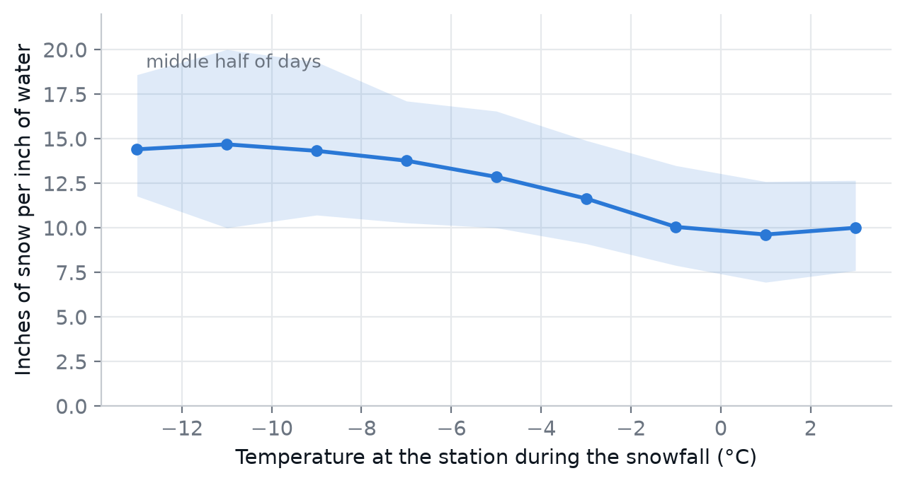
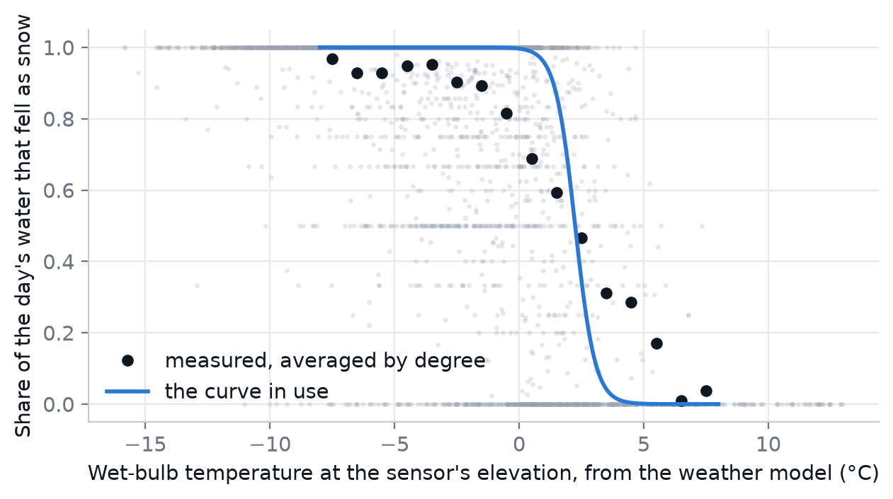

How we tested it
Every number here comes from winters or stations the model never saw while it was being fitted. Where something did not work, it says so.
1. How fluffy the snow is
The snow ratio is inches of snow per inch of water. It is the hardest part to predict and the part most forecasts guess at. The raw material is 13,124 days of snowfall measured by hand at Sierra stations since 1979. Colder storms make lighter snow, but with a lot of scatter.

The model in use is fitted on 1,197 hand-measured snow days at 44 stations from the five winters that have detailed upper-air data, using temperature, wind, and humidity aloft plus the amount of water. Given the measured water, it misses the snowfall by 1.66 in on average, against 2.02 in for Kuchera (the common free method) and 2.07 in for a flat 10:1.


| Winter held out | Snow days | Kuchera error (in) | This site (in) |
|---|---|---|---|
| 2021–22 | 231 | 2.40 | 2.06 |
| 2022–23 | 487 | 1.93 | 1.46 |
| 2023–24 | 207 | 1.92 | 1.61 |
| 2024–25 | 131 | 1.36 | 1.42 |
| 2025–26 | 141 | 2.47 | 1.97 |
What did not work: training on the full 45-year record. Its upper-air data is coarse and does not line up with the forecast models, so it made the forecasts slightly worse, and it is not used.
2. Rain or snow
At 5,405 wet days across 22 Tahoe snow sensors, the share of water that fell as snow is the snowpack's water gain divided by the precipitation. The curve in use turns the model's wet-bulb temperature into that share.

Three methods were tried and came out tied: about 2.4 mm of water miscalled per wet day, half the 4.9 mm you get by calling everything snow.
A mistake we caught: an earlier version of this test read the sensors' daily records one day off, which made every method look much worse and one winter look broken. Lining the dates up fixed both.
3. How much water
Weather models are consistently too dry or too wet at particular spots in the mountains. Each dot below is one model's total water at one sensor as a share of what the sensor measured (52,206 model-days).

Correcting each model to its nearest sensor improves every measure below, most of all the big storms.
Guards: a corrected day is never allowed to exceed the wettest day its sensor has recorded, and the blend takes its amount from the middle models, so one model with a runaway correction cannot carry the total. (One model delivers 13% of the measured water at Mt Rose; uncapped, its correction once turned 43 mm into 247.)
| Water forecast | Total vs measured | Daily error (in) | 3-day error (in) | 3-day error, 2 in+ storms |
|---|---|---|---|---|
| Raw average of four models | 88% | 0.23 | 0.43 | 0.90 |
| Corrected to the sensors (in use) | 102% | 0.21 | 0.35 | 0.59 |
4. Wind gusts
The weather models' own gust field runs low in the mountains, so above the base this site estimates gusts from the faster air 500 m higher up, which is where gusts come from. Against 29,068 hours of measured gusts at the Palisades snow sensor (8,010 ft, five winters), the wind 500 m up tracks the measured gusts better than the wind at the sensor's own height: correlation 0.79 against 0.73, and an average miss of 5.7 mph against 6.7.
The limit: that sensor sits in a sheltered spot and averages only 7 mph, and the one other free sensor is more sheltered still. So the method's shape is tested, but how strong gusts get on an exposed ridge is not. Treat ridge gusts as estimates.
What is not tested yet
These are backtests against model archives. Live forecasts made by this site are being saved and will be graded against the sensors by lead day as they come due, including the ± ranges. The correction is fitted on short-range model data and applied to every lead time, which is untested beyond a day or two.
Sources: NOAA GHCN-Daily and CoCoRaHS hand measurements, USDA SNOTEL sensors, and model archives from Open-Meteo.